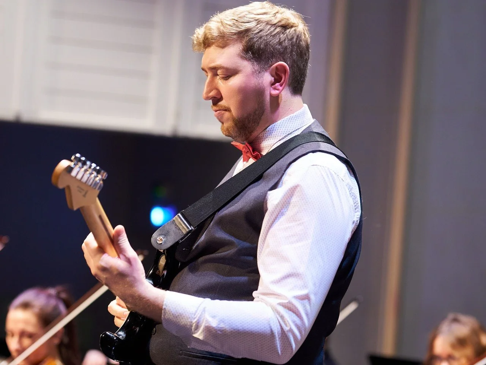

Гитарный ансамбль
Ансамбль — это когда гитара перестаёт быть инструментом «для себя». Вместе мы играем аранжировки в разных жанрах и выходим на сцену.

Как мы работаем
- Репетиции в Санкт-Петербурге — расписание подберём под состав
- Жанры: рок, джаз, фолк, блюз и авторские аранжировки
- Учимся слушать друг друга и держать ансамбль, а не просто играть ноты
- Концерты и отчётные выступления — несколько раз в год
Условия участия
Подойдёт любителям с базовым опытом: вы уверенно держите инструмент, знаете основные аккорды и готовы репетировать. Возраст и стиль не важны — важно желание играть вместе.
Если сомневаетесь в своём уровне — напишите, подскажу, хватит ли навыков, или предложу пару индивидуальных занятий «на вход».
Что понадобится
- Своя гитара (акустика или электро)
- 30–40 минут домашней работы в неделю
- Желание выступать на сцене
Медиа
Записи выступлений и фото с концертов появятся здесь — раздел наполняется.
Видео и фотоальбом мероприятий — этап 2. Первые материалы появятся после ближайших концертов. Чтобы не пропустить, подпишитесь на Telegram-канал.
Хотите играть в ансамбле?
Напишите в Telegram: расскажите о своём опыте и инструменте — я отвечу про расписание и ближайший набор.
Узнать об участии